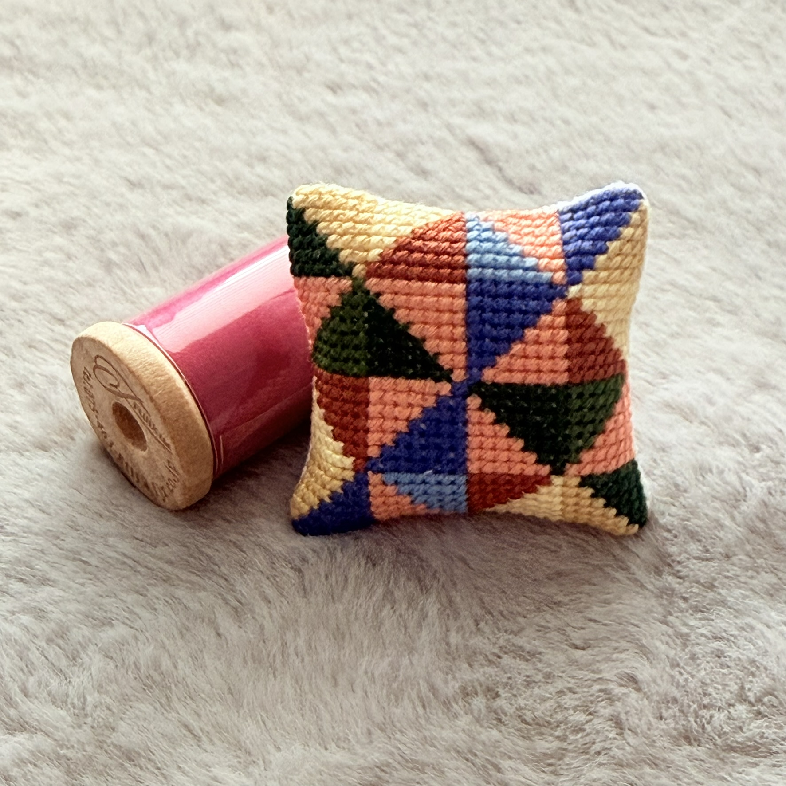
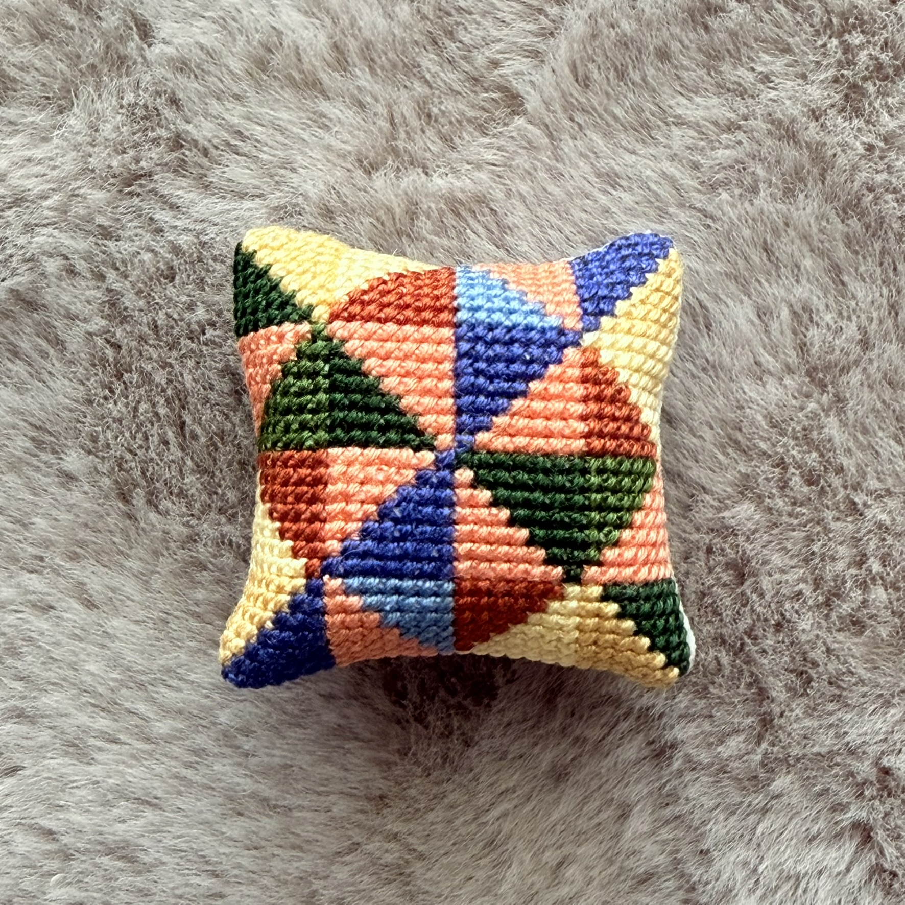
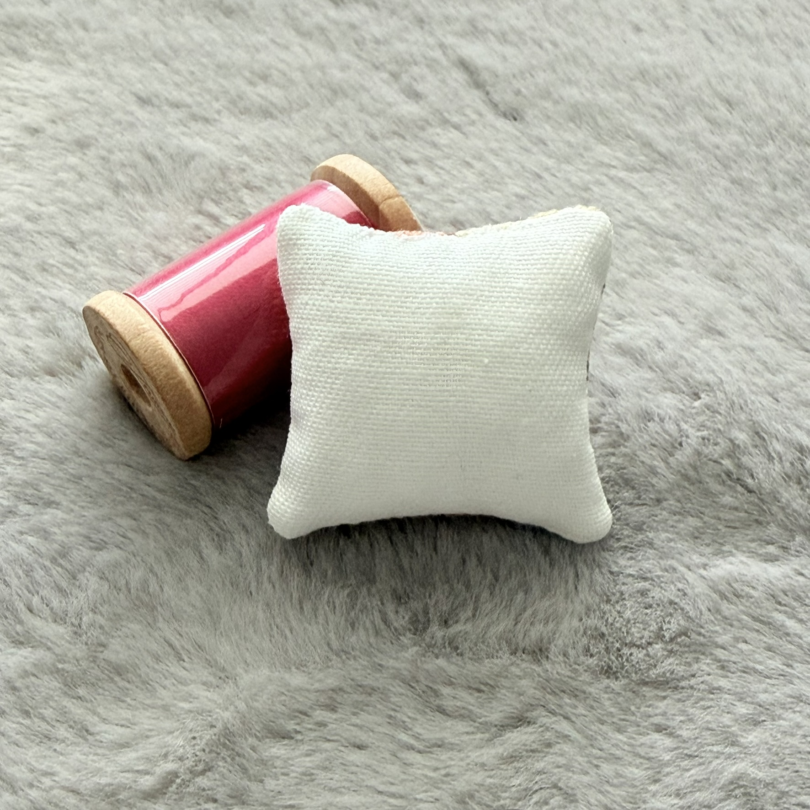
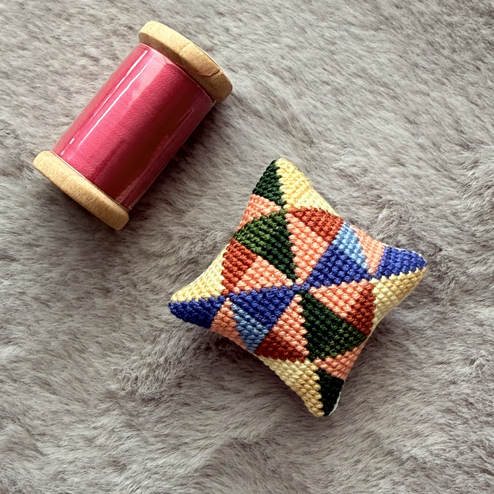

CP-MH-0001
Mosaic Cushion
Tiny Cushion by clolorful geometric mosaics
THB 100
Size
4 x 4 cm
Material
DMC Floss and Zweigart Canvas
Technique
Cross-Stitch
Maker
Craft-P Studio
Mosaic is a hand-stitched miniature cushion inspired by geometric patchwork. Every tiny stitch comes together to create a playful harmony of color, making each piece a small work of textile art.